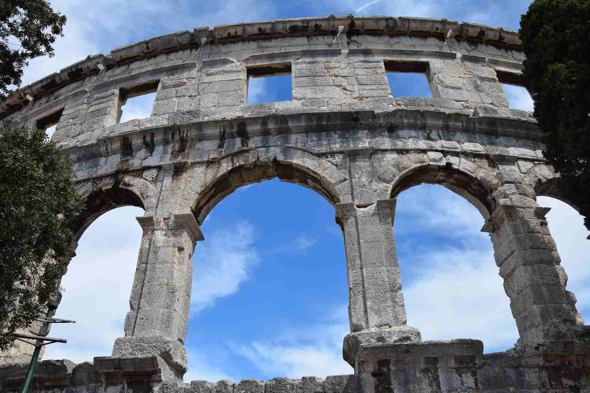
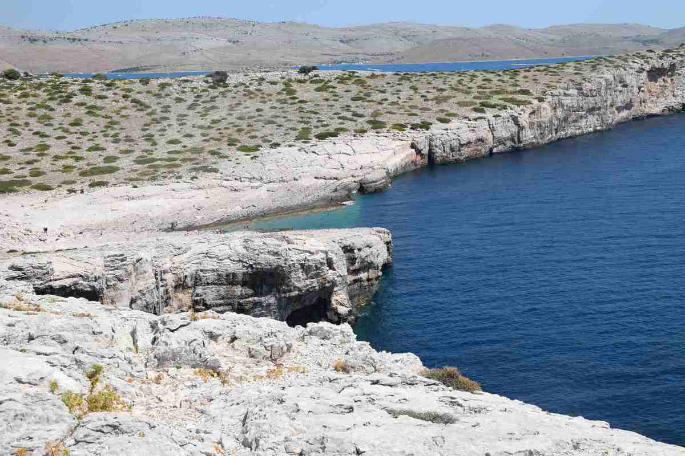
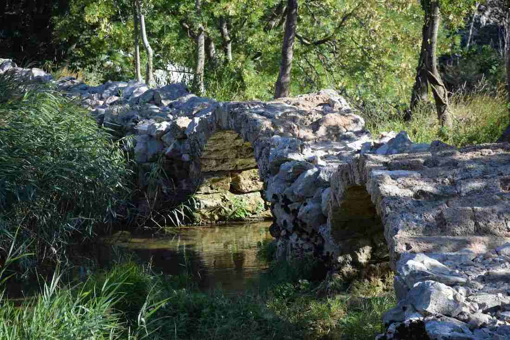
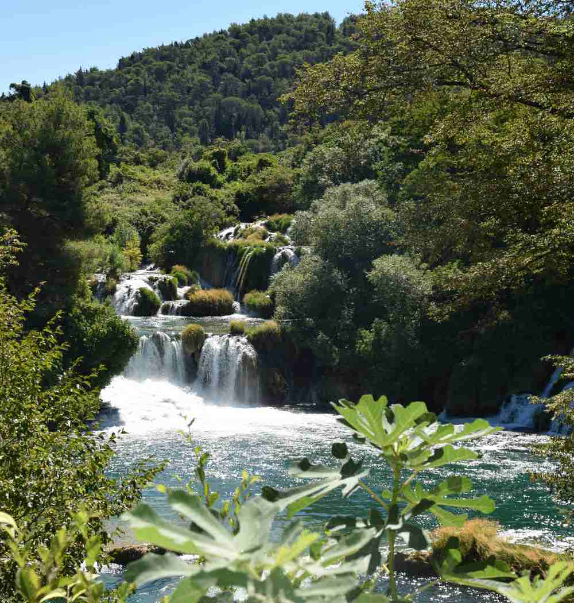

Croatie - 2016
Ville de Pula
L'organisation du voyage et notamment la recherche d'hébergement, nous a amené à consulter le site d'une "Bretonne en Croatie". Un site très complet qui nous a orienté sur les visites à faire en Croatie et permis de trouver les logements pour chaque étape. Je recommande vivement !

Arrivée sur la pointe de la péninsule de l'Istrie à Pula pour un séjour de quelques jours : au programme plages et les visites de Pula et Porec La visite de Pula passe par l'amphithéatre romain qui est le symbole de la ville et par la visite de la vieille ville. Sur Porec, on visitera notamment la basilique euphrasienne, classée au patrimoine mondial de l’Unesco.
Archipel des Kornati

On longe les côtes croates et découvrons des villes magnifiques, que ce soit Zadar, Sibenik ou encore Split. Mais c'est surtout l'archipel des Kornati composé de 150 îles qui restera en mémoire : rochers et mer transparente à perte de vue.On quitte la côte sur un couché de soleil sur Zadar...
Rivière Krupa

Destination Krupa : son canyon et son monastère. Le panorama et le temps sont magnifiques. On commence par randonner le long de la rivière, une petite heure de randonnée très tranquille en passant par le magnifique pont en pierre de Kuda.Arrivée sur Krupa, on visite le monastère de la ville, ancien monastère orthodoxe Serbe.
Parc national de Krka

On roule un peu plus dans les terres en direction des parcs nationaux de Krka et Plitvice. On débute par Krka, en Dalmatie du Nord, le parc s'étend sur 109 km2. On y découvre un cadre d'une beauté exceptionnelle, on longe la rivière Krka jusqu'aux chutes de Skradin.Le parc des lacs de Plitvice est tout aussi magnifique, inscrit au Patrimoine mondial de l'Unesco, situé à mi-chemin entre Zagreb et Zadar.
Il est composé de 16 lacs se déversant les uns dans les autres dans une succesion de près d'une centaine de cascades, une journée complète à marcher dans ce parc verdoyant et reposant, même si le lieu est très prisé des touristes.